УЛУЧШЕНИЕ ОПОРНОГО РЕШЕНИЯ
ТЕОРЕМА.
Если в задаче линейного программирования на максимум (минимум) хотя бы для одного вектора условий оценка разложения по базису не вырожденного опорного решения
(положительная), то опорное решение может быть улучшено, то есть можно найти новое опорное решение, на котором значение целевой функции будет больше (меньше).
СЛЕДСТВИЕ 1 (условие наискорейшего нахождения оптимального решения).
Чтобы обеспечить наибольшее изменение целевой функции при переходе от одного опорного решения к другому, векторы, выводимый из базиса и вводимой в базис опорного решения, необходимо выбирать, исходя из условий:
- В задаче на максимум 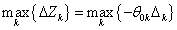
- В задаче на минимум 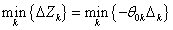
В упрощённом варианте вектор, вводимый в базис, можно выбрать исходя из условий:
- В задаче на максимум 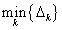
- В задаче на минимум 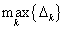
СЛЕДСТВИЕ 2 (признак оптимальности опорного решения).
Опорное решение задачи линейного программирования на максимум (минимум) является оптимальным, если для любого вектора условий оценка разложения по
базису опорного решения неотрицательная (неположительная), то есть:
- В задаче на максимум 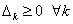
- В задаче на минимум 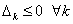
Действительно, если 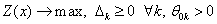, то 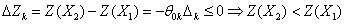, т.е. 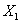 - оптимальное решение. Для задачи на минимум доказательство аналогично.
СЛЕДСТВИЕ 3 (признак единственности оптимального решения).
Оптимальное решение задачи линейного программирования является единственным, если для любого вектора условий, не входящего в базис, оценка отлична от нуля, то есть
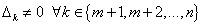
Здесь предполагается, что в базис оптимального решения входит первые 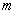 векторов
СЛЕДСТВИЕ 4 (признак существования бесконечного множества оптимальных решений).
Задача линейного программирования имеет бесконечное множество оптимальных решений, если при оптимальном решении оценка хотя бы одного вектора условия, не входящего в базе с равна нулю то есть
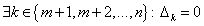
СЛЕДСТВИЕ 5 (признак отсутствия оптимального решения вследствие неограниченности целевой функции).
Задача линейного программирования не имеет решения в виду неограниченности целевой функции, если для какого-либо из векторов условий  с оценкой
с оценкой  противоречащей признаку оптимальности, среди коэффициентов разложения по базису опорного решения нет положительного, то есть
противоречащей признаку оптимальности, среди коэффициентов разложения по базису опорного решения нет положительного, то есть
- В задаче на максимум
- В задаче на минимум 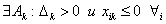